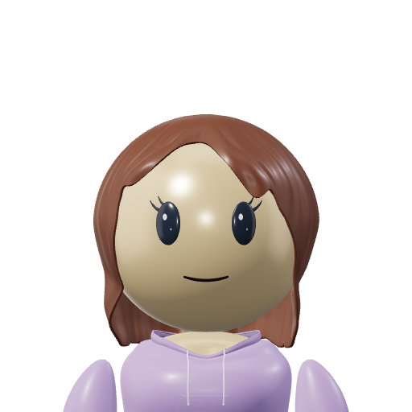
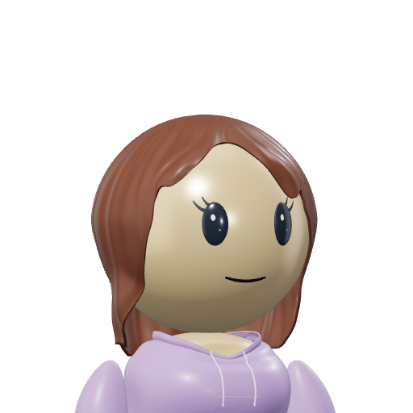
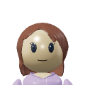
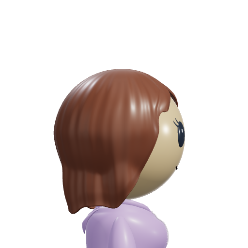
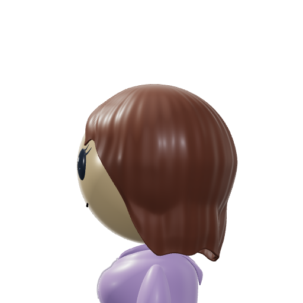
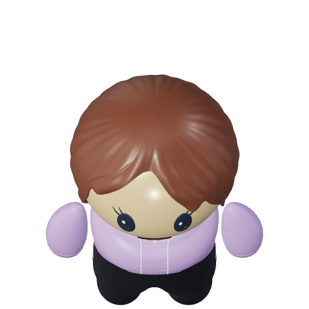
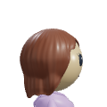

Compare the original B with the refined shape at matching angles and portrait size.
Open center with separate face-framing pieces.
Rounded tips and sculpted layers that blend into the temples.






